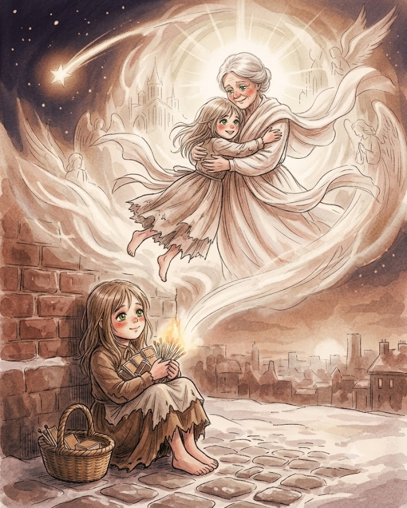
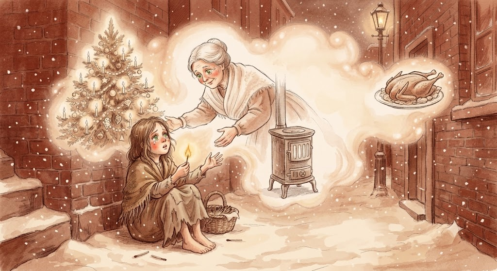

성냥을 하나 더 벽에 그었다. 다시 환하게 불꽃이 일었다. 그 불꽃 속에 할머니가 친절하고도 사랑스럽게, 맑고 환하게 빛을 내며 서 있었다. 소녀가 외쳤다. “할머니! 아, 저를 데려가 주세요! 성냥이 꺼지면 할머니가 사라지리란 걸 알아요. 할머니는 따뜻한 난로처럼 사라질 거예요. 저 맛있는 거위와 아름다운 크리스마스트리처럼요!” 소녀는 할머니와 함께 있고 싶었기에 재빨리 성냥 꾸러미를 모두 밝혔다. 성냥이 무척이나 환하게 빛나서 낮보다 더 밝아졌다. 할머니가 그렇게나 웅장하고 아름다운 적이 없었다. 할머니가 소녀를 품에 안았다. 두 사람은 땅 위로 밝고도 경쾌하게 날아올랐다. 아주, 아주 높이. 저 위 추위도 배고픔도, 두려움도 없는 곳으로……. 두 사람은 하느님과 함께 있었다. 하지만 모퉁이에서, 미소 짓는 입술에 붉은 뺨의 어린 소녀가 벽에 기대어 앉아 묵은 해의 마지막 밤에 얼어 죽었다. 새해의 태양이 측은한 한 사람의 모습 위로 떠올랐다. 소녀는 그곳에 얼어 뻣뻣하게 앉아있었다, 거의 다 타버린 성냥 꾸러미를 움켜쥔 채로…….

